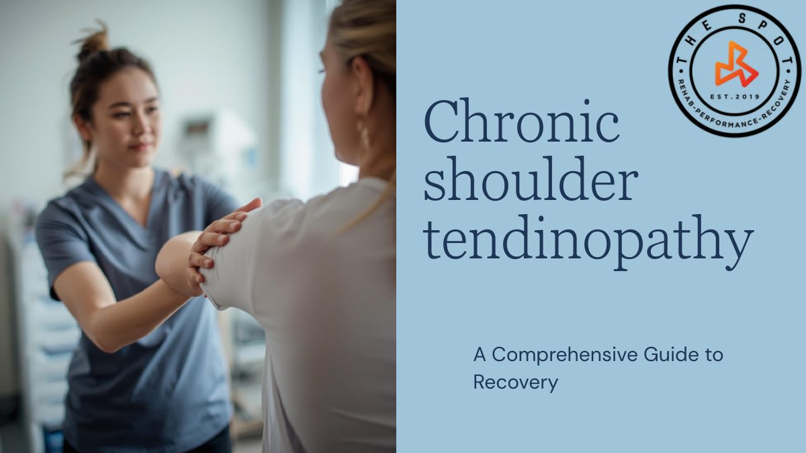

Chronic Shoulder Tendinopathy Home Exercise Program
The Spot Physiotherapy Rehab & Performance

I created a branded, 12-slide guide on chronic rotator cuff tendinopathy, a very common condition at the clinic. It was structured as a four-phase home exercise program, starting with pain management and restoring range of motion before progressing to strengthening. I learned how to translate physiology into a version a client would understand, a skill I have kept developing ever since.
The project’s impact was limited: it was designed mainly to show my supervisor my understanding of shoulder conditions, and it likely never reached any clients. That taught me a valuable lesson, and I made sure my next placement project would create real, lasting impact.
Skills built: client education, exercise prescription, visual communication